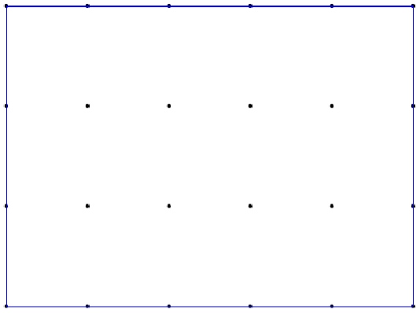
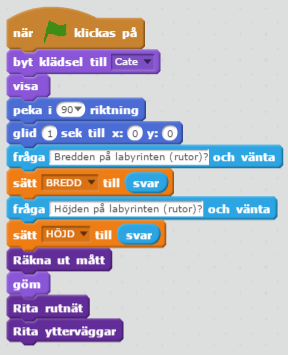
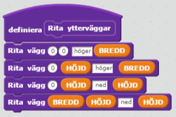
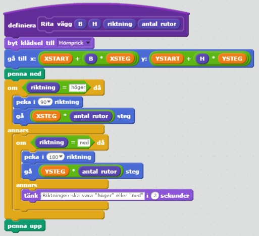

Vårt uppdrag är att skriva en labyrintgenerator i Scratch. Man ska kunna välja bredd och höjd på labyrinten, som ska vara rektangulär.
Det ska gå att ta sig mellan labyrintens fyra hörn. Labyrinten ska se olika ut från gång till gång.
En labyrintgenerator kan man ha nytta av i olika spel. Därför är det bra om vi har några få sprajtar som man kan importera med ryggsäcken.
Så här kan det se ut när vi är klara:
Låter det krångligt? Vi tar ett steg i taget. Jag har formulerat en önskelista som kanske kan hjälpa.
Den här önskan kan vi uppfylla genom att katten frågar om bredd och höjd. Vi sparar svaren i variablerna BREDD och HÖJD.
Pröva nu att göra en lösning på egen hand innan du går vidare.
Här är några block som kan vara bra att ha:


Än så länge är det bara katten som frågar. Ingen labyrint syns än.
Jag har valt STORA BOKSTÄVER för variabler som används av flera block. Ett exempel är variabeln BREDD. Sådana globala variabler kan ge programfel som är svåra att hitta. Därför sätts deras värden bara en gång.
Variabler med små bokstäver används inom ett block.
BREDD och HÖJD?Vi vill att det ser ut något i den här stilen om vi svarar BREDD 5 och HÖJD 3.
Om vi pekar med muspekaren på scenen så ser vi att Scratch har ett koordinatsystem där X går från –240 till 240 och Y går från –180 till 180. Våra yttersta prickar behöver ligga en liten bit in från kanten så att de syns. Jag har därför använt variablerna
XSTART,
YSTART,
XSLUT och
YSLUT som du kan se i bilden. Jag satte t.ex. XSTART till –230 för att hålla mig en bit från vänsterkanten. Genom att använda variabler och inte skriva t.ex. –230 direkt i koden kan jag justera storleken enkelt om det behövs.

Med 5×3 rutor (bredd×höjd) behövs det ju sex hörnprickar på bredden och fyra på höjden. Avståndet mellan ytterhörnen på bredden är XSLUT–XSTART pixlar och genom att dividera med BREDD får vi antalet pixlar mellan hörnprickarna. Vi kallar det avståndet XSTEG. Se bilden, där YSTEG också visas.

där B är bredden och H höjden. Det nedre vänstra hörnet kan t.ex. vara (B, H) = (0, 0) och övre högra hörnet (B, H) = (BREDD, HÖJD).
Ändra gärna koden som du skrev i steg 1. Det är viktigt att skriva om kod som inte passar längre.
Hörnprickarna kanske kan vara en ny klädsel hos katten? Då slipper vi skapa en ny sprajt.
Några block som kan vara bra att ha:


Så här kan det se ut när vi är klara:

Det är fyra ytterväggar att rita. Kan du dela upp jobbet i mindre delar?
Här ser du de block som jag har lagt till eller ändrat. Resten är som innan.
  